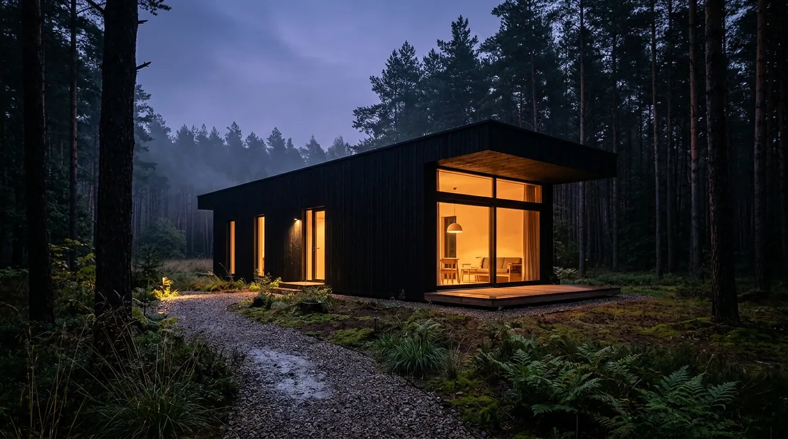
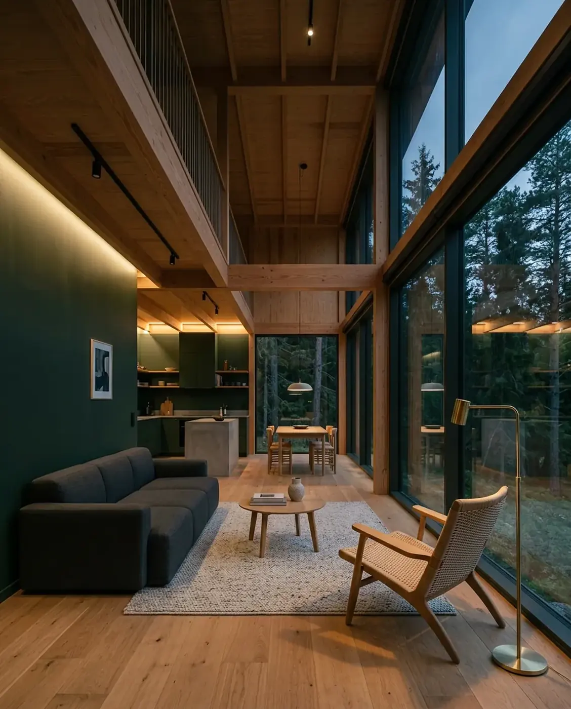
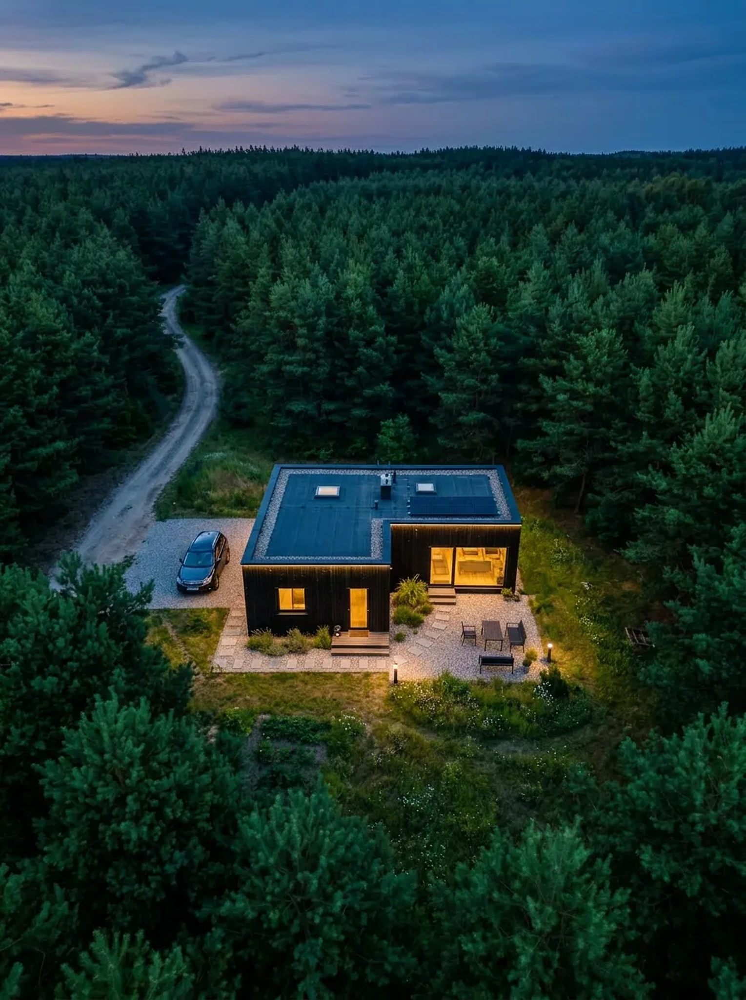
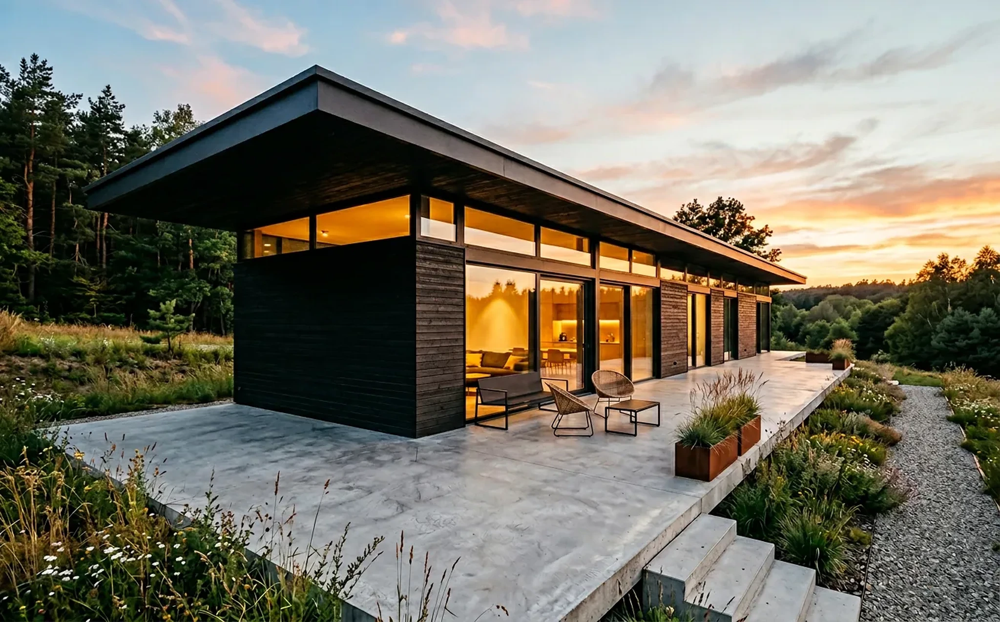
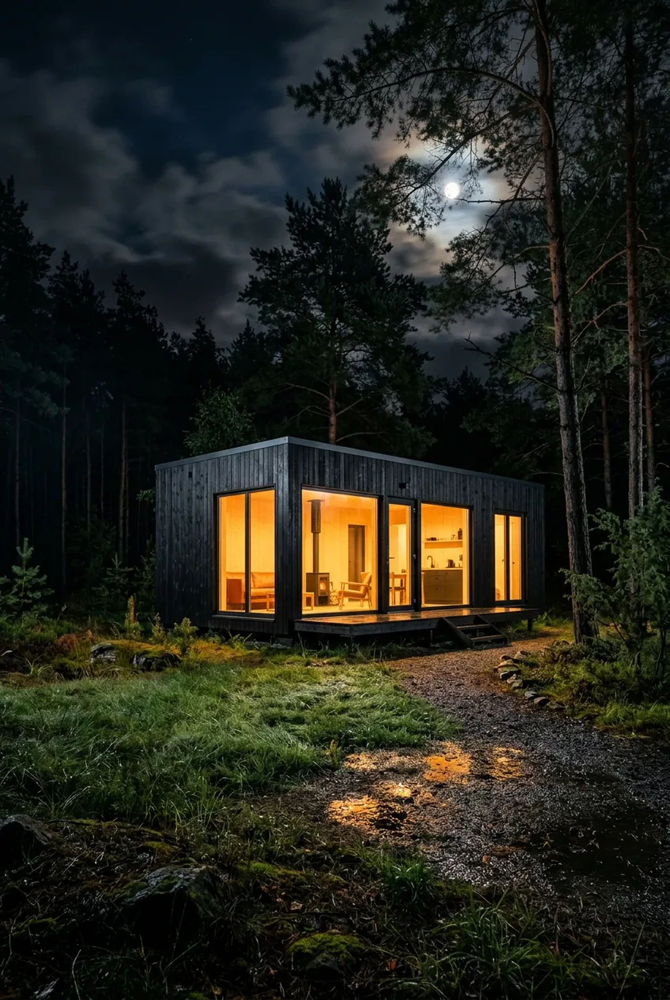
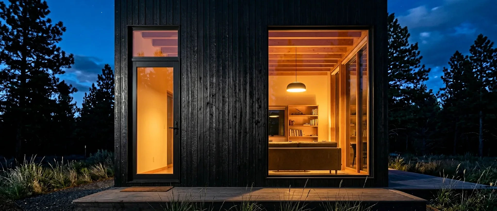

Wspólna strefa, jedna sypialnia i wydzielone miejsce pracy.

MODULART / SYSTEM M-03KONCEPCJA / 74 M²*
Dom składa się z modułów. Projekt: z decyzji.
Najpierw układ, działka i zakres odpowiedzialności. Dopiero potem termin, cena i produkcja.
UKŁAD / M-0374 m²*3 moduły / 2 sypialnie
Złóż pierwszy układ
*Wizualizacja i układ demonstracyjne. Projekt wymaga dostosowania do działki.
Dodaj przestrzeń tylko wtedy, gdy ma zadanie.
Konfigurator jest demonstracją. Powierzchnia i zakres cenowy są orientacyjne, bez działki, przyłączy, transportu i formalności.
Układ zawiera 2 moduły.
RZUT ROBOCZY / M‑02SKALA POGLĄDOWA
Ten sam system. Inny dzień życia.
Układ zaczyna się od sposobu używania domu, nie od maksymalnej liczby metrów.
Living i Night tworzą prosty podział dnia i odpoczynku.
Dodatkowy moduł może działać jako gabinet albo pokój okresowy.
DACH / WARSTWY*KONSTRUKCJA*INSTALACJE W MODULE*PODŁOGA / POŁĄCZENIE*MODUŁ
M‑02*specyfikacja do potwierdzenia
M‑02*specyfikacja do potwierdzenia
Moduł jest częścią budynku, nie gotowym budynkiem.
Fabryka może zamknąć konstrukcję i znaczną część instalacji. Fundament, połączenia, teren i formalny odbiór nadal należą do całej inwestycji.
- W fabryce
- powtarzalna kontrola warstw i instalacji modułu
- Na styku
- połączenia modułów, szczelność i ciągłość instalacji
- Na działce
- fundament, media, dojazd, odwodnienie i otoczenie
Fabryka może być gotowa. Działka jeszcze nie.
Termin zależy od tego, czy decyzje i prace przygotowawcze są domknięte przed startem produkcji.
Prace na działce biegną własnym torem.
Ich zakres nie znika dlatego, że moduły powstają poza placem budowy.
S‑01Badanie i przygotowanie terenuprzed projektem fundamentu
S‑02Fundament i przepustyzgodnie z projektem do działki
S‑03Przyłącza i odwodnieniezakres lokalny, warunki operatorów
S‑04Droga i plac montażowynośność, promień skrętu, miejsce dźwigu
S‑05Połączenia i roboty końcowepo osadzeniu modułów
Jedna inwestycja. Trzy pola odpowiedzialności.
konstrukcja, przegrody, instalacje w module, kontrola jakości
fundament, przyłącza, dostęp, odwodnienie i prace zewnętrzne
projekt do działki, uzgodnienia, pozwolenia i odbiory
Kontrola jakości następuje przed zamknięciem warstwy.
Lista pokazuje logikę odbiorów fabrycznych, nie deklaruje realnej certyfikacji.
- RAMAgeometria i połączenia konstrukcyjneZAPIS DEMO
- INSTALACJEtrasy, próby i punkty styku modułówZAPIS DEMO
- PRZEGRODYciągłość warstw przed zamknięciemZAPIS DEMO
- WYKOŃCZENIEpowierzchnie zabezpieczone do transportuZAPIS DEMO


Parametry powstają z warstw, nie z zielonej etykiety.
Przed ofertą potrzebne są potwierdzone materiały, współczynniki, mostki na połączeniach i obliczenia dla konkretnej lokalizacji.


- Ściana
- układ i współczynnik po obliczeniach
- Połączenie
- ciągłość izolacji między modułami
- Okno
- parametr, montaż i orientacja względem stron świata
- Energia
- projektowana charakterystyka, nie marketingowa obietnica

Dom musi dojechać, skręcić i zostać podniesiony.
Wymiary modułu są także problemem logistycznym. Trasa, ograniczenia drogowe, nośność gruntu i promień pracy dźwigu są częścią weryfikacji działki.
- Trasaszerokość, wysokość, skręty, ograniczenia
- Wjazdbrama, nachylenie, nośność nawierzchni
- Dźwigmiejsce podpór, zasięg, kolizje napowietrzne
- Pogodawarunki dopuszczające bezpieczny montaż
Termin zaczyna się po zamknięciu danych wejściowych.
- 01Weryfikacja działki
prawo, grunt, media, transport
- 02Projekt do działki
układ, fundament, branże
- 03Zamrożenie zakresu
specyfikacja i budżet
- 04Produkcja
moduły i kontrola fabryczna
- 05Prace terenowe
równolegle, jeśli projekt pozwala
- 06Montaż i odbiór
po gotowości działki
Cena modułów nie jest ceną całej inwestycji.
Zakres demonstracyjny rozdziela trzy koszyki, zanim pojawi się liczba.
Pytania przed wyborem modelu.
Odpowiedzi opisują logikę konceptu, nie realne warunki sprzedaży.
Czy dom może stanąć na każdej działce?
Nie. Plan miejscowy lub warunki zabudowy, grunt, dostęp, media i lokalne wymogi muszą zostać sprawdzone.
Czy cena z konfiguratora jest ofertą?
Nie. To ilustracyjny zakres oparty wyłącznie na powierzchni modułów i bez kosztów zależnych od działki.
Czy produkcja zawsze trwa 90 dni?
Nie podajemy takiej obietnicy. Harmonogram można ustalać dopiero po projekcie, decyzjach, formalnościach i potwierdzeniu dostępności.
Czy modułowy znaczy mobilny?
Ten koncept dotyczy stałego budynku. Transport modułów jest etapem budowy, nie obietnicą późniejszego przenoszenia domu.
Przynieś działkę i potrzeby, nie gotowy katalog marzeń.
Formularz lokalny: niczego nie wysyła.